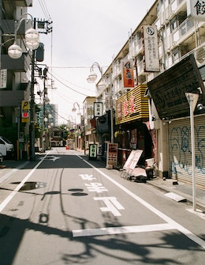

Experience


Present - ?
轉職人生
前端工程師
因為嚮往工程師的工作型態而踏上了轉職到道路。
2019/02 - Present
行政專員
心路基金會
負責處理行政相關事務及一部分人資相關業務
2016/09 - 2017/05
業務代表
勵鵬有限公司
從事陌生開發及商品銷售
About 吳致億

目前正在心路基金會擔任行政專員一職，工作主要內容包含：文件收發、印鑑管理、員工申訴管道、新進員工教育訓練、人事管理規章修訂、勞資會議招開及相關事務處理、員工福利計畫執行、職業安全衛生相關措施規劃及各項專案的執行。因為希望有更高的職涯天花板及嚮往工程師的工作型態而踏上了轉職的道路。